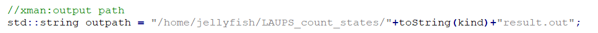
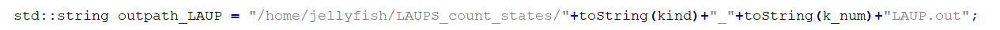

JBLA (Jellyfish based LAUPs analysis application) [1] is an algorithm we used to calculate and analyze LAUPs based on the improved Jellyfish 2.2.6 version.
The flow chart of JBLA is as follows:
For JBLA source code, please click JBLA_code.zip for download.
The configuration requirements and installation methods of JBLA are consistent with that of Jellyfish.
Please see the Homepage of Jellyfish 2 for detailed description.
After the JBLA is installed, the LAUPS_count_states method can be used to calculate and analyze the LAUPs of a genome file.
The parameters of LAUPS_count_states are:
1.the PATH of the file
2.start K
3.end K
4. the result file number index
For example, the following command (under the LAUPS_count_states directory) :
./LAUPS_count_states test.fasta 9 14 1.
will calculate and analyze LAUPs of test. Fasta with K from 9 to 14.
Note that the current output directory is hard-coded，see:


In specific calculations, you should modify this path in your code, and then use the “make”command to compile and then run it.
[1] L. Zhang, M. Xiao, J. Zhou, and J. Yu, "Lineage-associated Underrepresented Permutations (LAUPs) of Mammalian Genomic Sequences Based on a Jellyfish-based LAUPs analysis application (JBLA)," Bioinformatics, pp. bty392-bty392, 2018.